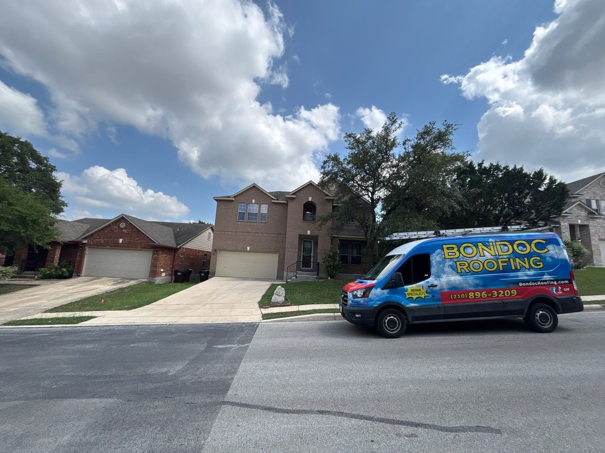

01
Roof repair
Leaks, weather damage and wear and tear. Problem areas sealed and secured before more rain gets in.
- Leaks
- Missing or broken shingles
- Weather damage


Roofing · San Antonio, TX
Family-owned since 2010. Every step explained, constant updates, and a clean site when we leave.
Get my free inspectionCall (210) 987-8212
Family-owned since 2010
Free inspection, then an honest answer: repair, replace or leave it alone.
GAF Master Elite, top 2% of US roofers. Family-owned since 2010, with warranty-backed work.
Services
Residential roofing across San Antonio and the Hill Country, plus gutters, siding and attic ventilation.
Leaks, weather damage and wear and tear. Problem areas sealed and secured before more rain gets in.
When damage keeps coming back, a full replacement. Done fast, and cleaned up when the crew leaves.

After severe weather we inspect, diagnose and repair storm and hail damage, and handle the claim end to end.

How it goes
Meet a roofing advisor for a free inspection and talk through your options.
Your advisor and the production team order materials, pull permits and schedule around you.
It gets loud and messy, and the crew cleans up at the end of the day.
Your project manager walks you through the finished roof.
The work


Homeowners
4.9 · 1291 Google reviews
Exceptional Service and Outstanding Craftsmanship! I cannot say enough great things about Bondoc Roofing. From start to finish, their team demonstrated professionalism, honesty, and genuine care for our family and home. What could have been a stressful experience, dealing with a roof leak and a full roof replacement, was made completely manageable thanks to their excellent communication and attention to detail.
I HIGHLY RECOMMEND Bondoc Roofing for any roofing needs, whether repair or replacement. James and Andy were so great through the whole process - Fast, efficient and the best price. From start to finish every step was explained and I was given continuous updates, all questions were promptly answered. Had my house, two sheds replaced and their impressive team had it done and cleaned up in less than two days.
I had my roof replaced today, and it turned out great. It was a pleasure working with Eric and Andy from Bondoc Roofing. They maintained excellent communication throughout the project, keeping me informed on scheduling updates and progress. Their pricing was very competitive as well. While some companies quoted lower prices, I felt confident that Bondoc would deliver quality work, and they absolutely did.
We recently hired Bondoc Roofing to install new gutters and upgrade our attic ventilation, and we couldn't be happier with the results. The crew was punctual, professional, and took the time to explain the entire process. Since the installation, our attic is noticeably cooler, and the new gutters handled the heavy rain perfectly without a single clog.
About
Roofing runs in the Bondoc family. The brothers grew up on job sites with their dad, working above the San Antonio skyline.
Serving San Antonio and the Hill Country since the early 2000s, official since 2010. Residential repairs and replacements, with an advisor, project manager and office team on every job.

Hours & directions
10127 Morocco St #164, San Antonio, TX 78216
Call or text any time, the line is open 24 hours. Inspections come to your home.